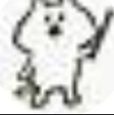

2024年10月13日

こんにちわ。最弱からじゃくになりました。どっちも変わらないんですけどね（笑）
お知らせの通り、僕のオリジナルキャラクターができました！(かわいいでしょ)

僕だってかわいいよ！
あ、いたんだ...
失礼な人ですな... あ、自己紹介忘れてた...
どうもこんにちは。僕はじゃくの助手のココツです。よろしくお願いします。
みんなこれからもよろしくね！
この人達は色々と変なことをやらかしますが、よろしくお願いします。あと、なんでじゃくだけ画像の画質が悪いんだ...?